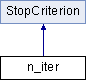

Inheritance diagram for n_iter:

Public Member Functions | |
| virtual bool | stop (std::vector< double > x0, std::vector< double > x1, double f0, double f1, std::vector< double > grad) override |
| Функция, осуществляющая проверку выбранного критерия остановки и возвращающая соответсвующее значение | |
| void | Set_n_hat (int n_h) |
| int | Get_n_hat () |
 Public Member Functions inherited from StopCriterion Public Member Functions inherited from StopCriterion | |
| void | Set_eps (double epsil) |
Additional Inherited Members | |
| Protected Attributes inherited from StopCriterion | |
| double | eps |
| double | eps_2 |
The documentation for this class was generated from the following files:
- StopCriterion.h
- StopCriterion.cpp